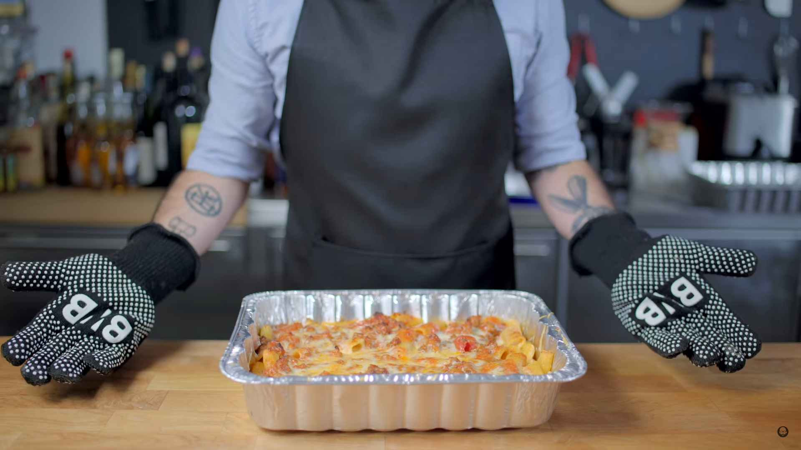

Baked Ziti and Lasagna inspired by The Sopranos

Rarely does food play such a central character in a TV show or movie that's not specifically about food,
but in The Sopranos, it might as well be one of the family.
The crown jewel of which, despite Artie Bucco's hapless attempts, is the cuisine of Carmela Soprano.
Strap on your gold President and build a ramp for the ducks,
because it's time to emotionally repress our murderous mentality with some cheesy,
saucy pasta - with a layer of basil underneath the cheese, of course.
Ingredients:
- Extra virgin olive oil
- 1 large onion, chopped
- 6 cloves crushed garlic
- 1 pound ground beef
- 1 pound sweet italian sausage (casing removed)
- Tomato paste (1-2 Tbsp)
- (4) 28oz cans San Marzano tomatoes (lightly crushed)
- 1 parmesan cheese rind
- 1 whole stem basil
- Chopped basil, to taste
- Kosher salt
- Freshly ground black pepper
Recipe:
- In a dutch oven, give a generous pour of extra virgin olive oil and bring to a simmer over medium heat.
- Add 1 large chopped onion and stir until soft and translucent.
- Add 6 cloves of crushed garlic and sauté for an additional minute until fragrant.
- Next, set aside your onion and garlic and cook your beef and sausage in batches until it is brown and crumbly.
- Drain off most of the fat and add the garlic and onion back into the pot. Then, add a few tablespoons of tomato paste.
- Add (4) 28oz cans of San Marzano tomatoes (lightly crushed) to the pot. Stir to combine.
- For moisture, fill one of your tomato cans with water and add to the pot.
- Add 1 parmesan cheese rind as well as 1 whole stem of basil to the pot. Cover the pot and bring to a simmer.
- Once the sauce is bubbling, stir and partially cover the pot and reduce the heat to about as low as your stove will go. Simmer for 1 ½ hours, keep the sauce
bubbling, and stir occasionally.
- Add some chopped basil to the pot and season to taste with kosher salt and freshly ground black pepper. Cover and set aside the sauce for later recipes.